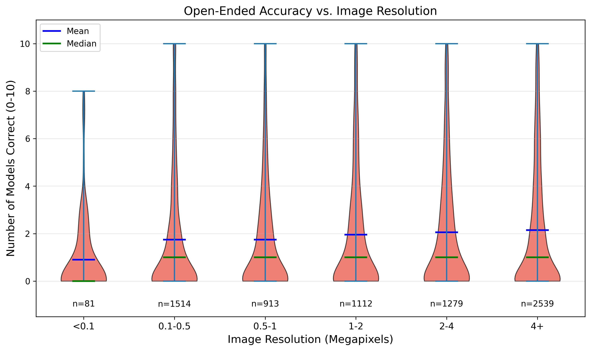
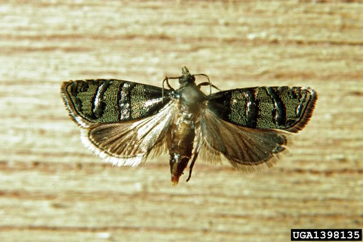
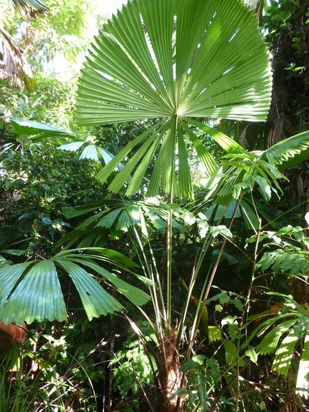

A. Prompt Templates
All prompts are designed for rigorous, reproducible evaluation. Each explicitly defines the task scope to prevent ambiguity.
Raw files are available in the prompts/ directory.
System Prompt
You are an expert in agricultural species identification.
Track-Specific Scope Definitions
| Track | Scope Definition |
|---|---|
| Crop | Agricultural CROP (cultivated plant used for food, feed, fiber, oil, etc.) |
| Livestock | LIVESTOCK (domesticated farm animal); label may be a species or a breed |
| Pest | Agricultural PEST (typically an arthropod such as insect/mite, or a nematode) harmful to crops |
| Weed | WEED or INVASIVE PLANT (unwanted plant species in agricultural/managed environments) |
Open-Ended Prompt Template
You are doing agricultural species recognition (AgriTaxon).
Track type: {track}
Scope definition:
{scope}
Task: Identify the entity shown in the image within the scope above.
OUTPUT CONSTRAINT (EXACT-MATCH):
- You may think or write analysis before the final answer.
- Output the answer in the end of your response as:
detailed thinking and analysis ...
answer: <CANONICAL_NAME>
Multi-Choice Prompt Template
You are doing agricultural species recognition (AgriTaxon).
Track type: {track}
Scope definition:
{scope}
Task: Identify the entity shown in the image within the scope above.
Options:
A. {option_a}
B. {option_b}
C. {option_c}
D. {option_d}
OUTPUT CONSTRAINT:
- You may think or write analysis before the final answer.
- Output the answer in the end of your response as:
detailed thinking and analysis ...
answer: A/B/C/D
Design Rationale
Our prompt design ensures fair evaluation through three principles:
(1) Scope-constrained canonical naming — each track defines the entity category and requires the canonical scientific or common name;
(2) Structured output — the answer: format enables reliable extraction and exact-match scoring;
(3) Thinking allowance — models are explicitly permitted to reason before answering, leveraging chain-of-thought capabilities.
B. EPPO Entity Classification Prompt
To classify EPPO database entities into pest vs. weed categories (Section 3.1 of the main paper), we use GPT-5 Mini with the following system prompt.
For each entity, the Wikipedia content is provided in the user message, and the model outputs one of: pest, weed_invasive, pathogen, host_or_crop, or other.
You are an expert agricultural taxonomist. Your task is to classify organisms into one of the following categories based on their Wikipedia description. ## Classification Categories ### pest (Agricultural Pest) An Agricultural Pest is an animal organism that causes direct damage to crops, forest trees, pasture, stored products, or other cultivated plants through feeding or other destructive behavior. Typical examples include insects, mites, nematodes, molluscs (such as snails and slugs), and in some cases vertebrates such as rodents or birds when they are recognized as agricultural pests. ### weed_invasive (Weed and Invasive Plant) A Weed and Invasive Plant is a plant species that plays a harmful role in agricultural fields, pastures, orchards, forests, or natural ecosystems by growing where it is not desired and competing with crops or native vegetation. ### pathogen (Plant Pathogen) A Plant Pathogen is a microorganism or microbe-like organism that primarily causes disease in plants, leading to symptoms such as leaf spots, blights, wilting, rots, galls, or other pathological changes. ### host_or_crop (Host or Crop Plant) A Host or Crop Plant is a plant species that is primarily cultivated, managed, or studied as a useful plant in agriculture, forestry, horticulture, or landscaping. ### other (Other or Unclear) Other or Unclear is a catch-all category for entities that cannot be reliably assigned to the above categories. ## Output Format Respond with ONLY the category name (one of: pest, weed_invasive, pathogen, host_or_crop, other). Do not include any explanation.
C. API Cost Breakdown
Total benchmark cost across all 14 models: $1,554.70 USD (including $88.50 for LLM-as-a-Judge alias validation via GPT-5 Mini). Prices without official USD listing (GLM, Doubao) are converted from CNY at 1 USD = 6.91 CNY.
| Model | In ($/1M) | Out ($/1M) | MC Cost | OE Cost | Judge | Total |
|---|---|---|---|---|---|---|
| Proprietary Models | ||||||
| gemini-3-pro-preview | 2.00 | 12.00 | $224.0 | $400.1 | $4.8 | $629.0 |
| gemini-3-flash-preview | 0.50 | 3.00 | $32.6 | $66.4 | $5.8 | $104.8 |
| gpt-5 | 1.25 | 10.00 | $72.1 | $119.8 | $5.8 | $197.7 |
| gpt-5-mini | 0.25 | 2.00 | $20.5 | $20.9 | $6.7 | $48.1 |
| claude-haiku-4-5 | 1.00 | 5.00 | $48.9 | $51.4 | $7.7 | $108.0 |
| doubao-seed-2-0-pro | 0.46 | 2.31 | $22.1 | $30.3 | $4.6 | $57.0 |
| doubao-seed-2-0-lite | 0.09 | 0.52 | $4.1 | $4.4 | $5.2 | $13.7 |
| Open-Source Models | ||||||
| kimi-k2.5 | 0.60 | 3.00 | $44.2 | $64.4 | $5.9 | $114.6 |
| glm-4.6v | 0.14 | 0.43 | $2.9 | $4.4 | $6.5 | $13.8 |
| qwen3-vl-235b-a22b | 0.40 | 1.60 | $13.7 | $15.2 | $6.6 | $35.5 |
| qwen3.5-397b-a17b | 0.60 | 3.60 | $16.6 | $17.2 | $6.6 | $40.4 |
| qwen3-vl-30b-a3b | 0.20 | 0.80 | $7.7 | $8.6 | $7.3 | $23.6 |
| glm-4.6v-flashx | 0.02 | 0.22 | $1.1 | $3.0 | $7.4 | $11.5 |
| qwen3.5-35b-a3b | 0.25 | 2.00 | $45.1 | $104.3 | $7.6 | $157.0 |
| Total Benchmark Cost | Judge: $88.5 | $1,554.7 | ||||
D. Resolution Analysis
We examined whether image resolution correlates with recognition accuracy. Images in the 0.5–1 MP range have the lowest mean accuracy (3.24 models correct out of 14), while images above 4 MP achieve the highest (3.66 models correct). However, this effect is substantially weaker than the Wikipedia popularity effect (which shows a 2× gap), suggesting that resolution alone does not guarantee recognition success—the model must also have learned about the species during training.

E. Agentic Baseline: Tool & Prompt Details
Complete specification of the image cropping tool and prompts used in the agentic baseline.
Raw files are available at prompts/agentic_*.
Tool Definition
image_crop: Crop a specific region of the image for closer inspection. Use this tool when you need to examine fine details like: - Leaf patterns, textures, or venation - Insect body parts (antennae, legs, wings) - Animal markings or features Input: A bounding box with normalized coordinates (0-1): x1 (float): Left boundary y1 (float): Top boundary x2 (float): Right boundary y2 (float): Bottom boundary Output: A cropped 448×448 view of the specified region.
Processing Algorithm
Given bounding box [x1, y1, x2, y2] and image size (W, H):
1. Convert to pixels: px_i = x_i × W, py_i = y_i × H
2. Compute center and size:
cx = (px1 + px2) / 2, cy = (py1 + py2) / 2
s = max(px2 - px1, py2 - py1)
3. Make square and expand: s' = s × 1.5
4. Enforce minimum size: s' = max(s', 224)
5. Compute crop region centered at (cx, cy) with side s'
6. Shift into bounds if crop exceeds image boundaries
7. Crop and resize to 448 × 448 using LANCZOS
Agentic System Prompt
You are an expert in agricultural species identification. You have access to a tool called `image_crop` that allows you to crop and zoom into specific regions of the image for closer inspection. Guidelines: 1. First, examine the full image to get an overall understanding. 2. If you're uncertain or need to see fine details (leaf patterns, insect parts, animal markings), use the image_crop tool to zoom in. 3. You can use the tool up to 2 times per image. 4. After examining all necessary details, provide your final answer. Remember: The crop tool returns a zoomed view of the specified region, allowing you to see details that might not be visible in the full image.
Agentic User Prompt
You are doing agricultural species recognition (AgriTaxon).
Track type: {track}
Scope definition:
{scope}
Task: Identify the entity shown in the image within the scope above.
Options:
A. {option_a} B. {option_b}
C. {option_c} D. {option_d}
INSTRUCTIONS:
1. First analyze the full image. If you can confidently identify the species, provide your answer.
2. If you need to see more details (leaf texture, body parts, markings), use the image_crop tool to zoom into relevant regions.
3. After your analysis, output your final answer as:
answer: A/B/C/D
Agent Loop Pseudocode
Input: Image I, question Q, options {A,B,C,D}, max_calls K=2
Output: Final answer a ∈ {A,B,C,D}
messages ← [SystemPrompt, (I, Q, options)]
tool_count ← 0
while tool_count < K do
(response, tool_calls) ← LLM(messages, tools=[image_crop])
if tool_calls = ∅ then
return ExtractAnswer(response)
end if
for each call in tool_calls do
bbox ← call.arguments
I_crop ← image_crop(I, bbox)
Append (response, call) to messages
Append I_crop as tool result to messages
tool_count ← tool_count + 1
end for
end while
response ← LLM(messages, tools=∅)
return ExtractAnswer(response)
F. Error Type Examples
Representative examples for each of the five error types from the human-annotated 75 Acc-error cases (Gemini 3 Pro Preview, open-ended evaluation).



